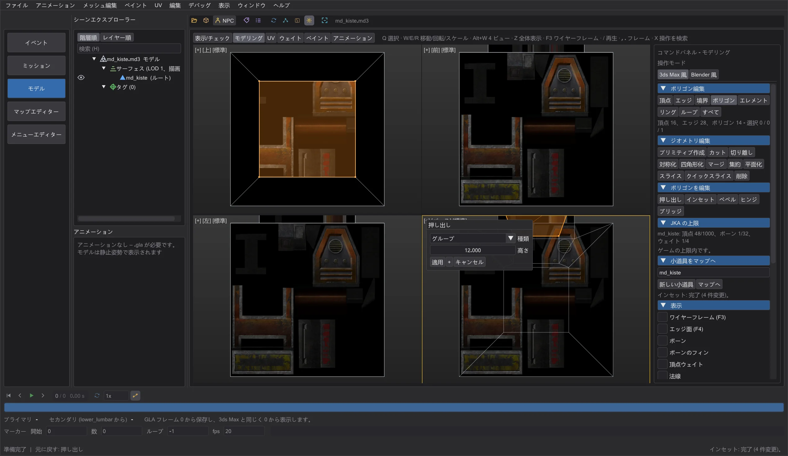
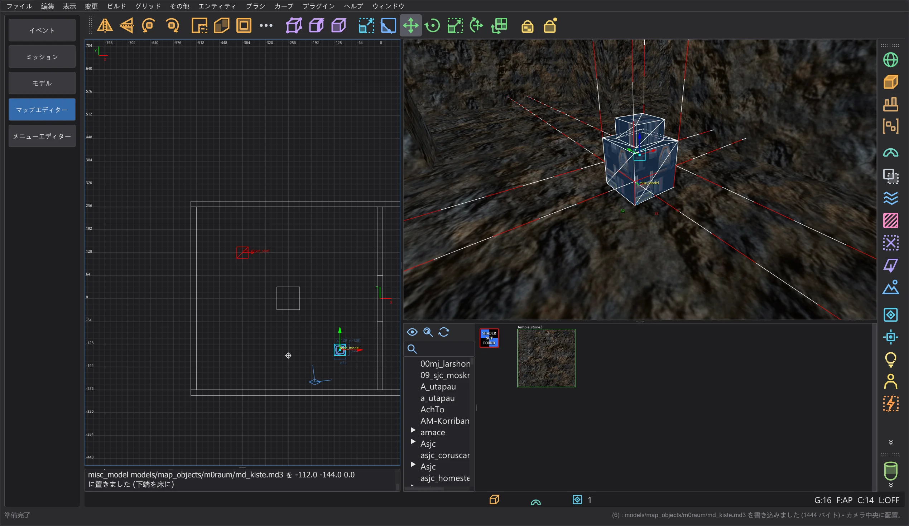

モデルタブ: モデリングとマップ用小道具
3ds Max の編集可能ポリゴンや Blender の編集モードのようなポリゴンツールで .glm や .md3 の面を作り変え、椅子や箱などの小道具をワンクリックで開いているマップに置きます。
モデリング領域#
モデルタブ上部で領域 モデリング を選びます。キー 1〜5 (Blender 風は 1〜3) でレベルを選択: 頂点、エッジ、境界、ポリゴン、エレメント。3ds Max と同じく各レベルが自分の選択を保ちます。クリックで選択、Ctrl で追加、Alt で除外 (Blender: Shift で追加/除外)、ドラッグで交差する全てを選択。ビューはモデルの上にポリゴンを描きます - ファイルの平らに並ぶ 2 つの三角形は 1 つの四角形で、四角形化 で結合します。W/E/R (Blender G/R/S) で選択を移動・回転・拡縮。ロールアウト ポリゴン編集 (Blender: 編集モード) にレベルのツールがあり、同じものがメニュー メッシュ編集、ビューの右クリック、検索 (X、Blender 風は F3) にもあり、ツールチップにキーが書かれています (3ds Max 風: Autodesk の表の既定キー、例: Shift+E 押し出し、Ctrl+Shift+B ベベル、Ctrl+Shift+C 面取り、Alt+L/Alt+R ループ/リング)。キーのないツールはメニューでの場所が書かれています。モデルがなければ 新しい小道具 が、マップエディターで選択中のテクスチャで空の .md3 を始めます。

ツールとツールボックス#
値のあるツールはビューの左上に小さなボックスを開きます: 結果はすぐに見え、値をドラッグするとライブで変わります。適用 (Enter) で確定、+ は確定して結果に同じツールをもう一度、キャンセル (Esc) で元通り。各ツールは 1 回の元に戻す単位です。押し出し はポリゴンを持ち上げ (グループ、ローカル法線、ポリゴンごと)、または境界から帯を伸ばします。インセット は内側に小さなコピーを作り、各エッジを同じ距離だけ内へ。ベベル は押し出して輪郭を変えます。面取り はエッジを帯に置き換えるか頂点を切り落とします。接続 と ループカット はポリゴンを横切るエッジを追加。カット はエッジや頂点を順にクリックして切ります。溶接、ターゲット溶接、マージ は頂点を結合。平面化 (Alt+M) は選択を一つの平面に移します (平均法線、その中心を通る)。集約 (Ctrl+Alt+C) はつながった各グループを一つの頂点にし、スライス は軸に垂直な平面で、クイックスライス (Ctrl+Shift+Q) はビューで 2 回クリックした線で切ります。ヒンジ はポリゴンを境界エッジの一つを軸に回します。ブリッジ は 2 つの境界か 2 つのポリゴンを四角形の帯でつなぎます。除去 はエッジや頂点を溶解し、削除 は穴を残します。切り離し はポリゴンを切り離すか、別テクスチャの新しいサーフェスへ。対称化 は半分をミラー。プリミティブ作成 は UV 付きのボックス、平面、円柱、球、円錐、チューブ、トーラスを追加します。動作できないツールは理由を示し (例: エッジに 3 つ目のポリゴンが付く)、何も変えません。新しい頂点はポリゴンの UV を受け継ぎ、隣接頂点のボーンウェイトを混ぜます (最大 4、合計 1)。
JKA の上限と LOD#
ロールアウト JKA の上限 は各サーフェスを書き出す形で数えます: 頂点 1000 未満 (SHADER_MAX_VERTEXES)、サーフェスごとのボーン最大 32、頂点ごとのウェイト 4、名前とテクスチャは 63 文字まで (MAX_QPATH)、タグはちょうど三角形 1 つ。上限を超えると行がオレンジになり、プレビュー中もボックスに表示されます。頂点が多すぎるときは 切り離し でサーフェスを分けます。.glm の他の LOD レベルはそのまま。この LOD を全体へ で全レベルを表示中のメッシュにします。
ワンクリックで小道具をマップへ#
小道具をマップへ で小道具に名前を付け、マップへ をクリック: JK Studio は自身のインポートフォルダー (ゲームフォルダーには決して書かない) の models/map_objects/<マップ>/<名前>.md3 に .md3 として書き、マップタブに切り替えてカメラ中央の床に misc_model として置きます。そこで他のエンティティと同じく移動・回転・拡縮できます。インポートフォルダーはエディターと q3map2 の検索パスにあり、テストやパッケージ時にマップの .pk3 に入るので、小道具は他の misc_model と同じくライトマップ付きでマップに焼き込まれます。変更するには、エンティティの model キーの横の編集ボタンをクリック (またはモデルタブから再開) - Ctrl+S の後、マップエディターが全コピーを読み直し、位置・角度・スケールは保たれます。

由来とライセンス#
モデリングツールは WhiteoutLib と WhiteoutFlakes に由来します (BSD 3-Clause ライセンス、AI 派生物の注記付き、Copyright (c) 2026 Fernando Sahmkow)。Jedi Academy のデータ (.glm と .md3 のサーフェス) だけを扱います。ライセンス文は licenses/、THIRD-PARTY.md、ヘルプ > バージョン情報 にあります。